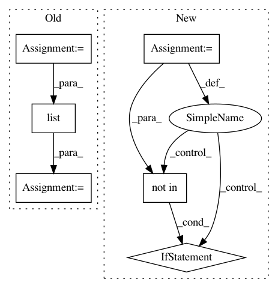

5c8f92c5d865bb8d8a90740506e4a7ef9f62398c,python/src/nnabla/utils/converter/tensorflow/importer.py,,_find_out_terminal_node,#Any#,32
Before Change
unlike_output_types = ["Const", "Assign", "Noop", "Placeholder"]
terminal_inputs = []
inputs = set()
outputs = set()
need_add_postfix = kwargs.get("postfix", False)
for node in graph_def.node:
strip_name = _strip_node_name(node.name)
if node.op == "Placeholder":
terminal_inputs.append(_strip_node_name(node.name))
outputs.add(strip_name)
inputs.update(set(node.input))
terminal_outputs = list(filter(lambda x: x not in unlike_output_types,
outputs - inputs))
if need_add_postfix:
terminal_inputs = add_postfix(terminal_inputs)
terminal_outputs = add_postfix(terminal_outputs)
After Change
strip_name = _strip_node_name(node.name)
terminal_inputs.append(strip_name)
for node in graph_def.node:
if input_cnt[node.name] == 0 and node.op not in unlike_output_types:
terminal_outputs.append(node.name)
if need_add_postfix:
terminal_inputs = add_postfix(terminal_inputs)
terminal_outputs = add_postfix(terminal_outputs)
In pattern: SUPERPATTERN
Frequency: 3
Non-data size: 6
Instances
Project Name: sony/nnabla
Commit Name: 5c8f92c5d865bb8d8a90740506e4a7ef9f62398c
Time: 2019-04-24
Author: Yuchi.Wen@sony.com
File Name: python/src/nnabla/utils/converter/tensorflow/importer.py
Class Name:
Method Name: _find_out_terminal_node
Project Name: open-mmlab/mmdetection
Commit Name: bfbd2223521126cefe0a25382f09a684c34e4a01
Time: 2018-10-20
Author: chenkaidev@gmail.com
File Name: mmdet/datasets/coco.py
Class Name: CocoDataset
Method Name: _filter_imgs
Project Name: keras-team/keras
Commit Name: 555ca942df407b8c1bf1d48383c60fa1bf09cc1d
Time: 2019-08-28
Author: francois.chollet@gmail.com
File Name: keras/engine/network.py
Class Name: Network
Method Name: losses